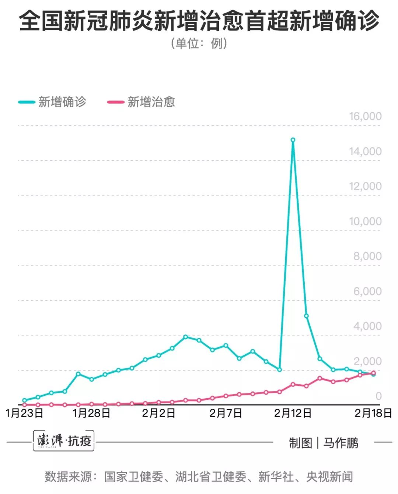

数说疫情0219：非湖北地区新增病例趋零，湖北趋缓但武汉尚待扭转
原文链接 备份链接 全国武汉以外地区全面向好，期待武汉落实五个“百分之百”终获成功！ 文 |《财经》数据研究员 徐进 图 |《财经》视觉中心 编辑 | 谢丽容 一、 累计确诊病例 截至2月18日24:00，全国累计报告确诊新冠肺炎病 …
国家卫健委网站
澎湃新闻记者 马作鹏
2月18日0—24时，31个省（自治区、直辖市）和新疆生产建设兵团报告新增确诊病例1749例，新增重症病例236例，新增死亡病例136例（湖北132例，黑龙江、山东、广东、贵州各1例），新增疑似病例1185例。
当日新增治愈出院病例1824例，解除医学观察的密切接触者25014人。
截至2月18日24时，据31个省（自治区、直辖市）和新疆生产建设兵团报告，现有确诊病例57805例（其中重症病例11977例），累计治愈出院病例14376例，累计死亡病例2004例，累计报告确诊病例74185例，现有疑似病例5248例。累计追踪到密切接触者574418人，尚在医学观察的密切接触者135881人。
湖北新增确诊病例1693例（武汉1660例），新增治愈出院病例1266例（武汉676例），新增死亡病例132例（武汉116例），现有确诊病例50633例（武汉38020例），其中重症病例11246例（武汉9562例）。累计治愈出院病例9128例（武汉4895例），累计死亡病例1921例（武汉1497例），累计确诊病例61682例（武汉44412例）。新增疑似病例596例（武汉234例），现有疑似病例3462例（武汉1649例）。
累计收到港澳台地区通报确诊病例94例：香港特别行政区62例（出院4例，死亡1例），澳门特别行政区10例（出院5例），台湾地区22例(出院2例，死亡1例)。
2月18日0—24时，31个省（自治区、直辖市）和新疆生产建设兵团报告新增确诊病例1749例。当日新增治愈出院病例1824例，解除医学观察的密切接触者25014人。
这也意味着，2月18日0—24时，31个省（自治区、直辖市）和新疆生产建设兵团报告新增治愈出院病例（1824例）首次超过新增确诊病例（1749例）。

戳这里进入
“全国新型冠状病毒感染病例实时地图”↓↓↓

本期编辑 邢潭
推荐阅读


原文链接 备份链接 全国武汉以外地区全面向好，期待武汉落实五个“百分之百”终获成功！ 文 |《财经》数据研究员 徐进 图 |《财经》视觉中心 编辑 | 谢丽容 一、 累计确诊病例 截至2月18日24:00，全国累计报告确诊新冠肺炎病 …
原文链接 备份链接 所有的鱼现在同步在 allthefishnews.wordpress.com 更新并可通过邮件订阅。你可以复制上方链接浏览器打开或点击 阅读原文 获取订阅链接。 根据丁香医生实时数据，截至 2020 年 2 月 16 …
原文链接 备份链接 所有的鱼现在同步在 allthefishnews.wordpress.com 更新并可通过邮件订阅。你可以复制上方链接浏览器打开或点击 阅读原文 获取订阅链接。 根据丁香医生实时数据，截至 2020 年 2 月 15 …
原文链接 备份链接 文 |《财经》数据研究员 徐进 图 |《财经》视觉中心 编辑 | 谢丽容 1. 全国累计新增确诊病例 图1 由图可见，国内非湖北地区正趋于平缓。 2. 新增病例：国内非湖北地区继续坚定下降，有望近日归零 图2 国内 …
原文链接 备份链接 所有的鱼现在同步在 allthefishnews.wordpress.com 更新。wordpress 页面中，可以通过电子邮件订阅。复制上方链接浏览器打开或点击 阅读原文 可获取订阅链接。 根据丁香医生实时数据， …